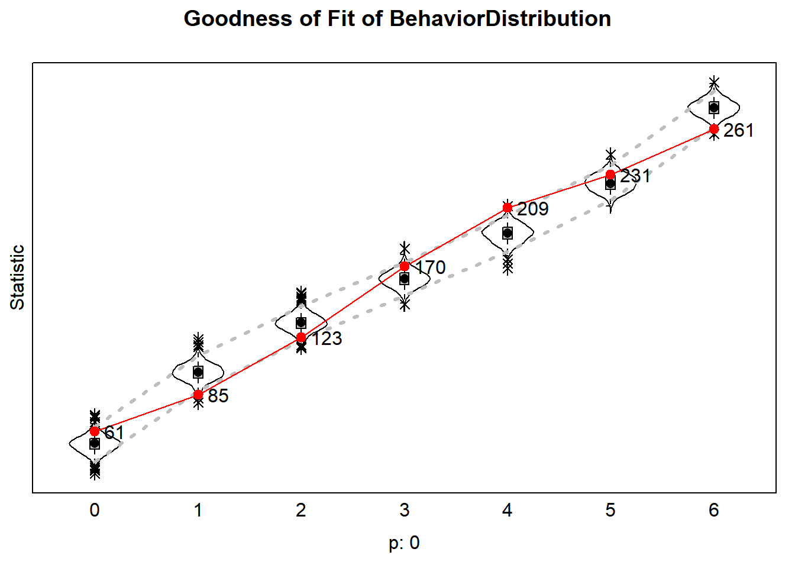

SAOM: Model selection
Last compiled on november, 2021
Let’s estimate the Stochastic Actor-Oriented Model (SAOM) implemented in R as the Simulation Investigation for Empirical Network Analysis (R-SIENA), developed by Snijders, Van de Bunt, and Steglich (2010).
Preparation
Clean the working environment.
# clean the working environment
rm(list = ls())We will:
- Read in our R-SIENA object list
- Inspect our data
- Define our effects
- Define our algorithm
- And estimate the SAOM
Below, we will follow these steps for club 1 (N=30). We will do the same procedure for the other clubs (see here).
Step 1: Data
We read in the R-SIENA objects list (clubdata_rsiena.RData) and we grab club 1 (N=30). For now we take as our network variable the kudos-network in which awarding/receiving at least 1 Kudo constitutes an i,j tie.
Our (dependent) behavioral variable is running frequency (in times per week; ranging from 0 to 7 times per week), and running duration (in half hours per week, capped at 7).
We included activity in other sports (e.g., cycling and swimming) as a time-varying covariate.
And we also included gender (men vs. women and others), and winter as constant and varying covariates, respectively.
load("clubdata_rsiena.Rdata") # load rsiena object list
mydata <- clubdata_rsiena[[1]] # grab club 1Step 2: Inspect data
We inspect the R-SIENA object
print01Report(mydata, modelname = "files/test")A text file is printed in the working directory.
Step 3: Define effects
We are going to define our ‘myeff’ object containing the model parameters. A list of all available effects for the given object can be displayed in browser by requesting “effectsDocumentation(myeff)”. See Ripley et al. (2021) for a substantial and mathematical description of all effects.
We build increasingly complex models.
We include:
- structural network effects
- network selection effects
- covariate effects on network and behavior dynamics
- network influence effects
We fix these effects to 0 and test them with the score-type test Schweinberger (2012) (we test the hypothesis that the parameter estimates are not 0, other than the model assumes).
myeff <- getEffects(mydata)
# effectsDocumentation(myeff)Structural network effects
First, we are going to include structural network effects, guided by recommendations of Snijders (2020): outdegree, reciprocity, and transitivity (GWESP).
We also add degree-related effects: indegree-popularity and outdegree-activity (square-root versions).
We tested the out-Isolate effect (leading to not awarding kudos) and this effect was not different from 0.
myeff1 <- includeEffects(myeff, gwespFF, name = "kudonet")
myeff1 <- includeEffects(myeff1, outActSqrt, inPopSqrt, name = "kudonet")
myeff1 <- setEffect(myeff1, outIso, name = "kudonet", fix = TRUE, test = FALSE, initialValue = 0)Selection effects
Second, we include a selection effect with respect to behavior. We use the higher-effect to control for aspirational tie-preferences (indicated by a negative parameter estimate).
myeff2 <- setEffect(myeff1, higher, name = "kudonet", interaction1 = "freq_run")Covariate effects
We include effects on tie changes of gender (monadic and dyadic).
myeff2 <- includeEffects(myeff2, egoX, altX, sameX, name = "kudonet", interaction1 = "gender")We have selected a rather simple model to simulate kudos tie-formation dynamics. Let’s estimate the model and assess the model’s GOF to additional effects that were not directly modeled: the in- and outdegree distribution and the geodesic distance distribution. We use ‘returnDeps=TRUE’ for keeping the simulated data (networks and behavior), for subsequent GOF assesment. We save the GOF-diagnostics in a list.
myalgorithm <- sienaAlgorithmCreate(projname = "test") # first, set the SAOM algorithm
ansM1 <- siena07(myalgorithm, data = mydata, effects = myeff2, # estimate the SAOM
batch = FALSE, verbose = FALSE, returnDeps = TRUE)
# calculate GOF diagnostics
gofi <- sienaGOF(ansM1,
IndegreeDistribution,
verbose = TRUE,
join = TRUE,
varName = "kudonet")
gofo <- sienaGOF(ansM1,
OutdegreeDistribution,
verbose = TRUE,
join = TRUE,
varName = "kudonet")
GeodesicDistribution <- function (i, data, sims, period, groupName,
varName, levls=c(1:5, Inf), cumulative=TRUE, ...) {
x <- networkExtraction(i, data, sims, period, groupName, varName)
require(sna)
a <- sna::geodist(symmetrize(x))$gdist
if (cumulative)
{
gdi <- sapply(levls, function(i){ sum(a<=i) })
}
else
{
gdi <- sapply(levls, function(i){ sum(a==i) })
}
names(gdi) <- as.character(levls)
gdi
}
gofgeo <- sienaGOF(ansM1,
GeodesicDistribution,
verbose = TRUE,
join = TRUE,
varName = "kudonet")
goflist <- list(gofi, gofo, gofgeo)
save(goflist, file= paste("files", "/", "test club 1", "/", "gof1.RData", sep=""))Indegree distribution
load("files/test club 1/gof1.RData")
plot(goflist[[1]])
Outdegree distribution
plot(goflist[[2]])
Geodesic distance distribution
plot(goflist[[3]])#> Note: some statistics are not plotted because their variance is 0.
#> This holds for the statistic: Inf.
GOF is acceptable!
For subsequent meta-analysis, we need to ensure that the model specification for all our club-networks is identical. Some effects were rather important in other clubs. We fix these to 0:
myeff2 <- setEffect(myeff2, outPopSqrt, name = "kudonet", fix = TRUE, test = FALSE, initialValue = 0)
myeff2 <- setEffect(myeff2, reciAct, name = "kudonet", fix = TRUE, test = FALSE, initialValue = 0)
myeff2 <- includeInteraction(myeff2, recip, gwespFF, parameter = 69, name = "kudonet")
eff1 <- myeff2[myeff2$include, ]$effect1[24]
eff2 <- myeff2[myeff2$include, ]$effect2[24]
myeff2 <- setEffect(myeff2, unspInt, fix = TRUE, test = FALSE, effect1 = eff1, effect2 = eff2)We have modeled the dynamics of kudos tie formation. Now let’s model dynamics in running behaviors.
Covariate effects
We start with effects on behavior changes of other variables.
- the interdependence between frequency and volume
- the interdependence between running and other sports
- gender on behavior
- winter on behavior (we exclude this effect, as it was not significantly different from 0)
myeff3 <- includeEffects(myeff2, effFrom, name = "time_run", interaction1 = "freq_run")
myeff3 <- includeEffects(myeff3, effFrom, name = "freq_run", interaction1 = "time_run")
myeff3 <- includeEffects(myeff3, effFrom, name = "time_run", interaction1 = "time_other")
myeff3 <- includeEffects(myeff3, effFrom, name = "freq_run", interaction1 = "freq_other")
myeff3 <- includeEffects(myeff3, effFrom, name = "freq_run", interaction1 = "gender")
myeff3 <- includeEffects(myeff3, effFrom, name = "time_run", interaction1 = "gender")Influence effects
Last, we include two influence effects to test our hypotheses on the influence of social support and social comparison processes respectively:
The indegree effect on behavior. This tests the social support explanation: the higher the indegree (our operationalization of received support), the greater the probability of increasing the behavior.
The average attraction towards higher alters effect This tests social comparison as assimilation.
We test these effects sequentially: so first, we estimate a model with the indegree effect on behavior added to the baseline model; second, we add the average attraction to higher alters effect.
We also fixed-and-tested the effect of outdegree on behavior, to rule out possible confounding of the outdegree effect. Score-type test indicated that outdegree-effects on behavior were 0.
myeff3 <- includeEffects(myeff3, indeg, name = "freq_run", interaction1 = "kudonet")
myeff3 <- includeEffects(myeff3, indeg, name = "time_run", interaction1 = "kudonet")
myeff4 <- includeEffects(myeff3, avAttHigher, name = "freq_run", interaction1 = "kudonet")
myeff4 <- includeEffects(myeff4, avAttHigher, name = "time_run", interaction1 = "kudonet")
myeff4 <- setEffect(myeff4, outdeg, name = "freq_run", interaction1 = "kudonet", fix = TRUE, test = FALSE,
initialValue = 0)
myeff4 <- setEffect(myeff4, outdeg, name = "time_run", interaction1 = "kudonet", fix = TRUE, test = FALSE,
initialValue = 0)Now check which effects are included in the myeff objects.
options(width = 100) # ignore (this is for the html formatting)
print(myeff3)#> name effectName include fix test initialValue parm
#> 1 kudonet constant kudonet rate (period 1) TRUE FALSE FALSE 0.90241 0
#> 2 kudonet constant kudonet rate (period 2) TRUE FALSE FALSE 0.83352 0
#> 3 kudonet constant kudonet rate (period 3) TRUE FALSE FALSE 0.48909 0
#> 4 kudonet constant kudonet rate (period 4) TRUE FALSE FALSE 0.55798 0
#> 5 kudonet constant kudonet rate (period 5) TRUE FALSE FALSE 0.28243 0
#> 6 kudonet constant kudonet rate (period 6) TRUE FALSE FALSE 0.90241 0
#> 7 kudonet constant kudonet rate (period 7) TRUE FALSE FALSE 0.55798 0
#> 8 kudonet constant kudonet rate (period 8) TRUE FALSE FALSE 1.17796 0
#> 9 kudonet constant kudonet rate (period 9) TRUE FALSE FALSE 0.48909 0
#> 10 kudonet constant kudonet rate (period 10) TRUE FALSE FALSE 1.45350 0
#> 11 kudonet constant kudonet rate (period 11) TRUE FALSE FALSE 1.52239 0
#> 12 kudonet outdegree (density) TRUE FALSE FALSE -0.58192 0
#> 13 kudonet reciprocity TRUE FALSE FALSE 0.00000 0
#> 14 kudonet GWESP I -> K -> J (#) TRUE FALSE FALSE 0.00000 69
#> 15 kudonet indegree - popularity (sqrt) TRUE FALSE FALSE 0.00000 0
#> 16 kudonet outdegree - activity (sqrt) TRUE FALSE FALSE 0.00000 1
#> 17 kudonet out-isolate TRUE TRUE FALSE 0.00000 1
#> 18 kudonet gender alter TRUE FALSE FALSE 0.00000 0
#> 19 kudonet gender ego TRUE FALSE FALSE 0.00000 0
#> 20 kudonet same gender TRUE FALSE FALSE 0.00000 0
#> 21 kudonet freq_run alter TRUE FALSE FALSE 0.00000 0
#> 22 kudonet freq_run ego TRUE FALSE FALSE 0.00000 0
#> 23 kudonet freq_run similarity TRUE FALSE FALSE 0.00000 0
#> 24 time_run rate time_run (period 1) TRUE FALSE FALSE 3.58161 0
#> 25 time_run rate time_run (period 2) TRUE FALSE FALSE 2.38621 0
#> 26 time_run rate time_run (period 3) TRUE FALSE FALSE 2.40920 0
#> 27 time_run rate time_run (period 4) TRUE FALSE FALSE 1.90920 0
#> 28 time_run rate time_run (period 5) TRUE FALSE FALSE 3.49540 0
#> 29 time_run rate time_run (period 6) TRUE FALSE FALSE 4.34023 0
#> 30 time_run rate time_run (period 7) TRUE FALSE FALSE 4.25402 0
#> 31 time_run rate time_run (period 8) TRUE FALSE FALSE 2.27126 0
#> 32 time_run rate time_run (period 9) TRUE FALSE FALSE 0.87471 0
#> 33 time_run rate time_run (period 10) TRUE FALSE FALSE 4.06437 0
#> 34 time_run rate time_run (period 11) TRUE FALSE FALSE 2.34023 0
#> 35 time_run time_run linear shape TRUE FALSE FALSE 0.01214 0
#> 36 time_run time_run quadratic shape TRUE FALSE FALSE 0.00000 0
#> 37 time_run time_run indegree TRUE FALSE FALSE 0.00000 0
#> 38 time_run time_run: effect from gender TRUE FALSE FALSE 0.00000 0
#> 39 time_run time_run: effect from freq_run TRUE FALSE FALSE 0.00000 0
#> 40 time_run time_run: effect from time_other TRUE FALSE FALSE 0.00000 0
#> 41 freq_run rate freq_run (period 1) TRUE FALSE FALSE 1.65057 0
#> 42 freq_run rate freq_run (period 2) TRUE FALSE FALSE 1.15402 0
#> 43 freq_run rate freq_run (period 3) TRUE FALSE FALSE 1.47126 0
#> 44 freq_run rate freq_run (period 4) TRUE FALSE FALSE 0.92069 0
#> 45 freq_run rate freq_run (period 5) TRUE FALSE FALSE 1.21954 0
#> 46 freq_run rate freq_run (period 6) TRUE FALSE FALSE 1.82069 0
#> 47 freq_run rate freq_run (period 7) TRUE FALSE FALSE 1.08506 0
#> 48 freq_run rate freq_run (period 8) TRUE FALSE FALSE 0.99310 0
#> 49 freq_run rate freq_run (period 9) TRUE FALSE FALSE 0.92069 0
#> 50 freq_run rate freq_run (period 10) TRUE FALSE FALSE 1.63333 0
#> 51 freq_run rate freq_run (period 11) TRUE FALSE FALSE 1.14483 0
#> 52 freq_run freq_run linear shape TRUE FALSE FALSE 0.01839 0
#> 53 freq_run freq_run quadratic shape TRUE FALSE FALSE 0.00000 0
#> 54 freq_run freq_run indegree TRUE FALSE FALSE 0.00000 0
#> 55 freq_run freq_run: effect from gender TRUE FALSE FALSE 0.00000 0
#> 56 freq_run freq_run: effect from time_run TRUE FALSE FALSE 0.00000 0
#> 57 freq_run freq_run: effect from freq_other TRUE FALSE FALSE 0.00000 0print(myeff4)#> name effectName include fix test initialValue parm
#> 1 kudonet constant kudonet rate (period 1) TRUE FALSE FALSE 0.90241 0
#> 2 kudonet constant kudonet rate (period 2) TRUE FALSE FALSE 0.83352 0
#> 3 kudonet constant kudonet rate (period 3) TRUE FALSE FALSE 0.48909 0
#> 4 kudonet constant kudonet rate (period 4) TRUE FALSE FALSE 0.55798 0
#> 5 kudonet constant kudonet rate (period 5) TRUE FALSE FALSE 0.28243 0
#> 6 kudonet constant kudonet rate (period 6) TRUE FALSE FALSE 0.90241 0
#> 7 kudonet constant kudonet rate (period 7) TRUE FALSE FALSE 0.55798 0
#> 8 kudonet constant kudonet rate (period 8) TRUE FALSE FALSE 1.17796 0
#> 9 kudonet constant kudonet rate (period 9) TRUE FALSE FALSE 0.48909 0
#> 10 kudonet constant kudonet rate (period 10) TRUE FALSE FALSE 1.45350 0
#> 11 kudonet constant kudonet rate (period 11) TRUE FALSE FALSE 1.52239 0
#> 12 kudonet outdegree (density) TRUE FALSE FALSE -0.58192 0
#> 13 kudonet reciprocity TRUE FALSE FALSE 0.00000 0
#> 14 kudonet GWESP I -> K -> J (#) TRUE FALSE FALSE 0.00000 69
#> 15 kudonet indegree - popularity (sqrt) TRUE FALSE FALSE 0.00000 0
#> 16 kudonet outdegree - activity (sqrt) TRUE FALSE FALSE 0.00000 1
#> 17 kudonet out-isolate TRUE TRUE FALSE 0.00000 1
#> 18 kudonet gender alter TRUE FALSE FALSE 0.00000 0
#> 19 kudonet gender ego TRUE FALSE FALSE 0.00000 0
#> 20 kudonet same gender TRUE FALSE FALSE 0.00000 0
#> 21 kudonet freq_run alter TRUE FALSE FALSE 0.00000 0
#> 22 kudonet freq_run ego TRUE FALSE FALSE 0.00000 0
#> 23 kudonet freq_run similarity TRUE FALSE FALSE 0.00000 0
#> 24 time_run rate time_run (period 1) TRUE FALSE FALSE 3.58161 0
#> 25 time_run rate time_run (period 2) TRUE FALSE FALSE 2.38621 0
#> 26 time_run rate time_run (period 3) TRUE FALSE FALSE 2.40920 0
#> 27 time_run rate time_run (period 4) TRUE FALSE FALSE 1.90920 0
#> 28 time_run rate time_run (period 5) TRUE FALSE FALSE 3.49540 0
#> 29 time_run rate time_run (period 6) TRUE FALSE FALSE 4.34023 0
#> 30 time_run rate time_run (period 7) TRUE FALSE FALSE 4.25402 0
#> 31 time_run rate time_run (period 8) TRUE FALSE FALSE 2.27126 0
#> 32 time_run rate time_run (period 9) TRUE FALSE FALSE 0.87471 0
#> 33 time_run rate time_run (period 10) TRUE FALSE FALSE 4.06437 0
#> 34 time_run rate time_run (period 11) TRUE FALSE FALSE 2.34023 0
#> 35 time_run time_run linear shape TRUE FALSE FALSE 0.01214 0
#> 36 time_run time_run quadratic shape TRUE FALSE FALSE 0.00000 0
#> 37 time_run time_run average attraction higher TRUE FALSE FALSE 0.00000 0
#> 38 time_run time_run indegree TRUE FALSE FALSE 0.00000 0
#> 39 time_run time_run outdegree TRUE TRUE FALSE 0.00000 0
#> 40 time_run time_run: effect from gender TRUE FALSE FALSE 0.00000 0
#> 41 time_run time_run: effect from freq_run TRUE FALSE FALSE 0.00000 0
#> 42 time_run time_run: effect from time_other TRUE FALSE FALSE 0.00000 0
#> 43 freq_run rate freq_run (period 1) TRUE FALSE FALSE 1.65057 0
#> 44 freq_run rate freq_run (period 2) TRUE FALSE FALSE 1.15402 0
#> 45 freq_run rate freq_run (period 3) TRUE FALSE FALSE 1.47126 0
#> 46 freq_run rate freq_run (period 4) TRUE FALSE FALSE 0.92069 0
#> 47 freq_run rate freq_run (period 5) TRUE FALSE FALSE 1.21954 0
#> 48 freq_run rate freq_run (period 6) TRUE FALSE FALSE 1.82069 0
#> 49 freq_run rate freq_run (period 7) TRUE FALSE FALSE 1.08506 0
#> 50 freq_run rate freq_run (period 8) TRUE FALSE FALSE 0.99310 0
#> 51 freq_run rate freq_run (period 9) TRUE FALSE FALSE 0.92069 0
#> 52 freq_run rate freq_run (period 10) TRUE FALSE FALSE 1.63333 0
#> 53 freq_run rate freq_run (period 11) TRUE FALSE FALSE 1.14483 0
#> 54 freq_run freq_run linear shape TRUE FALSE FALSE 0.01839 0
#> 55 freq_run freq_run quadratic shape TRUE FALSE FALSE 0.00000 0
#> 56 freq_run freq_run average attraction higher TRUE FALSE FALSE 0.00000 0
#> 57 freq_run freq_run indegree TRUE FALSE FALSE 0.00000 0
#> 58 freq_run freq_run outdegree TRUE TRUE FALSE 0.00000 0
#> 59 freq_run freq_run: effect from gender TRUE FALSE FALSE 0.00000 0
#> 60 freq_run freq_run: effect from time_run TRUE FALSE FALSE 0.00000 0
#> 61 freq_run freq_run: effect from freq_other TRUE FALSE FALSE 0.00000 0Seems allright!
Step 4: Estimate the model
Let’s estimate the model with the objective function for running activity comprising the shape effects and the indegree effect on behavior. We use the prevAns-option to use previous model-results as starting values for the estimation.
We will save the results in a html-table using the siena.table()-function, in the ‘files’-folder in our working directory. We will run the model as many times as necessary, until we reach a convergence ratio of < .25. We use ‘returnDeps=TRUE’ for keeping the simulated data (networks and behavior).
try <- 1
ansM2 <- siena07(myalgorithm, data = mydata, effects = myeff3, returnDeps = TRUE, prevAns = ansM1)
# the following script lets the model re-run until we get a good convergence ratio
while (TRUE) {
if (ansM2$tconv.max >= 0.25) {
try <- try + 1
print(paste("Model did not converge: ", ansM2$tconv.max, sep = ""))
print(paste("Try:", try, sep = " "))
ansM2 <- siena07(myalgorithm, data = mydata, effects = myeff3, prevAns = ansM2, returnDeps = TRUE)
} else {
siena.table(ansM2, type = "html", tstat = T, d = 3, sig = T, file = paste("files", "/", "test club 1",
"/", "Model 2", ".html", sep = ""))
print(paste("Reached convergence ratio of ", ansM2$tconv.max, sep = ""))
break
}
}This took some time. We also save the sienaFit-object to our “Principal club”-folder.
save(ansM2, file = paste("files", "/", "test club 1", "/", "model2.RData", sep = ""))Now follow the same procedure for the model comprising also the assimilation- (and outdegree-) effect. Again, we will run the model as many times as necessary, until we reach convergence. Again, we use prevAns.
try <- 1
ansM3 <- siena07(myalgorithm, data = mydata, effects = myeff4, returnDeps = TRUE, prevAns = ansM2)
# the following script lets the model re-run until we get a good convergence ratio
while (TRUE) {
if (ansM3$tconv.max >= 0.25) {
try <- try + 1
print(paste("Model did not converge: ", ansM3$tconv.max, sep = ""))
print(paste("Try:", try, sep = " "))
ansM3 <- siena07(myalgorithm, data = mydata, effects = myeff4, prevAns = ansM3, returnDeps = TRUE)
} else {
siena.table(ansM3, type = "html", tstat = T, d = 3, sig = T, file = paste("files", "/", "test club 1",
"/", "Model 3", ".html", sep = ""))
print(paste("Reached convergence ratio of ", ansM3$tconv.max, sep = ""))
break
}
}We save the sienaFit-object.
save(ansM3, file = paste("files", "/", "test club 1", "/", "model3.RData", sep = ""))Because we are now modeling the evolution of both the network and the attribute (running activity), we will add an additional indicator to evaluate GOF; namely, does the model capture the distribution of actors’ attribute levels over time?
gofbeh <- sienaGOF(ansM3, BehaviorDistribution, verbose = TRUE, join = TRUE, varName = "freq_run")
gofbeh2 <- sienaGOF(ansM3, BehaviorDistribution, verbose = TRUE, join = TRUE, varName = "time_run")
goflist2 <- list(gofbeh, gofbeh2)
save(goflist2, file = paste("files", "/", "test club 1", "/", "gof2.RData", sep = ""))Running frequency distribution
load("files/test club 1/gof2.RData")
plot(goflist2[[1]])#> Note: some statistics are not plotted because their variance is 0.
#> This holds for the statistic: 7.
Running duration distribution
plot(goflist2[[2]])#> Note: some statistics are not plotted because their variance is 0.
#> This holds for the statistic: 7.
GOF is adequate for the distribution of running frequency values, but not for the running duration values…
This may be due to the operationalization of this variable…
Step 5: Results
We present the SAOM results for club 1.
The first table presents the parameter estimates for (1) network structure; (2) network dynamics (selection); (3) behavior dynamics comprising shape effects, indegree effect on behavior, and covariate effects on behavior change. The second table adds the assimilation- and outdegree-effects on behavior.
The indegree-effect on running
| Effect | par. | (s.e.) | t stat. | |||||
| Network Dynamics | ||||||||
| constant kudonet rate (period 1) | 1.451 | (0.592) | . | |||||
| constant kudonet rate (period 2) | 1.446 | (0.608) | . | |||||
| constant kudonet rate (period 3) | 0.573 | (0.258) | . | |||||
| constant kudonet rate (period 4) | 0.655 | (0.264) | . | |||||
| constant kudonet rate (period 5) | 0.314 | (0.176) | . | |||||
| constant kudonet rate (period 6) | 1.129 | (0.382) | . | |||||
| constant kudonet rate (period 7) | 0.734 | (0.332) | . | |||||
| constant kudonet rate (period 8) | 1.869 | (0.731) | . | |||||
| constant kudonet rate (period 9) | 0.517 | (0.214) | . | |||||
| constant kudonet rate (period 10) | 2.200 | (0.617) | . | |||||
| constant kudonet rate (period 11) | 2.555 | (0.801) | . | |||||
| outdegree (density) | –6.251 | *** | (0.741) | –8.441 | ||||
| reciprocity | 5.097 | *** | (0.474) | 10.744 | ||||
| GWESP I -> K -> J (69) | 1.106 | *** | (0.280) | 3.956 | ||||
| indegree - popularity (sqrt) | 0.212 | (0.253) | 0.838 | |||||
| outdegree - activity (sqrt) | 0.612 | *** | (0.151) | 4.054 | ||||
| out-isolate | N.A. | (N.A.) | . | |||||
| gender alter | 0.345 | (0.323) | 1.066 | |||||
| gender ego | –0.532 | (0.366) | –1.454 | |||||
| same gender | –0.323 | (0.290) | –1.117 | |||||
| higher freq-run | 0.382 | (0.468) | 0.817 | |||||
| Behaviour Dynamics | ||||||||
| rate time-run (period 1) | 4.433 | (1.505) | . | |||||
| rate time-run (period 2) | 3.130 | (0.873) | . | |||||
| rate time-run (period 3) | 4.198 | (1.616) | . | |||||
| rate time-run (period 4) | 3.644 | (1.163) | . | |||||
| rate time-run (period 5) | 5.726 | (1.749) | . | |||||
| rate time-run (period 6) | 9.213 | (3.724) | . | |||||
| rate time-run (period 7) | 8.615 | (3.952) | . | |||||
| rate time-run (period 8) | 3.462 | (1.476) | . | |||||
| rate time-run (period 9) | 1.384 | (0.431) | . | |||||
| rate time-run (period 10) | 5.724 | (2.022) | . | |||||
| rate time-run (period 11) | 3.007 | (0.955) | . | |||||
| time-run linear shape | –0.020 | (0.055) | –0.355 | |||||
| time-run quadratic shape | 0.070 | ** | (0.022) | 3.198 | ||||
| time-run indegree | 0.017 | (0.016) | 1.084 | |||||
| time-run: effect from gender | –0.009 | (0.086) | –0.108 | |||||
| time-run: effect from freq-run | –0.064 | (0.077) | –0.826 | |||||
| time-run: effect from time-other | –0.004 | (0.015) | –0.238 | |||||
| rate freq-run (period 1) | 3.368 | (1.779) | . | |||||
| rate freq-run (period 2) | 1.948 | (0.647) | . | |||||
| rate freq-run (period 3) | 3.012 | (1.197) | . | |||||
| rate freq-run (period 4) | 2.089 | (0.683) | . | |||||
| rate freq-run (period 5) | 2.070 | (0.764) | . | |||||
| rate freq-run (period 6) | 4.616 | (2.219) | . | |||||
| rate freq-run (period 7) | 3.071 | (1.674) | . | |||||
| rate freq-run (period 8) | 1.621 | (0.606) | . | |||||
| rate freq-run (period 9) | 1.698 | (0.570) | . | |||||
| rate freq-run (period 10) | 2.937 | (1.097) | . | |||||
| rate freq-run (period 11) | 2.313 | (0.907) | . | |||||
| freq-run linear shape | –0.151 | * | (0.072) | –2.108 | ||||
| freq-run quadratic shape | –0.094 | ** | (0.035) | –2.644 | ||||
| freq-run indegree | 0.017 | (0.019) | 0.908 | |||||
| freq-run: effect from gender | –0.067 | (0.110) | –0.606 | |||||
| freq-run: effect from time-run | 0.066 | (0.048) | 1.390 | |||||
| freq-run: effect from freq-other | –0.018 | (0.040) | –0.450 | |||||
| † p < 0.1; * p < 0.05; ** p < 0.01; *** p < 0.001; | ||||||||
| all convergence t ratios < 0.11. | ||||||||
| Overall maximum convergence ratio 0.25. | ||||||||
The upward assimilation effect
| Effect | par. | (s.e.) | t stat. | |||||
| Network Dynamics | ||||||||
| constant kudonet rate (period 1) | 1.435 | (0.531) | . | |||||
| constant kudonet rate (period 2) | 1.445 | (0.538) | . | |||||
| constant kudonet rate (period 3) | 0.562 | (0.249) | . | |||||
| constant kudonet rate (period 4) | 0.650 | (0.273) | . | |||||
| constant kudonet rate (period 5) | 0.315 | (0.179) | . | |||||
| constant kudonet rate (period 6) | 1.140 | (0.384) | . | |||||
| constant kudonet rate (period 7) | 0.732 | (0.293) | . | |||||
| constant kudonet rate (period 8) | 1.885 | (0.578) | . | |||||
| constant kudonet rate (period 9) | 0.515 | (0.213) | . | |||||
| constant kudonet rate (period 10) | 2.155 | (0.717) | . | |||||
| constant kudonet rate (period 11) | 2.510 | (0.734) | . | |||||
| outdegree (density) | –6.244 | *** | (0.778) | –8.021 | ||||
| reciprocity | 5.096 | *** | (0.462) | 11.041 | ||||
| GWESP I -> K -> J (69) | 1.105 | *** | (0.297) | 3.719 | ||||
| indegree - popularity (sqrt) | 0.209 | (0.263) | 0.796 | |||||
| outdegree - activity (sqrt) | 0.615 | *** | (0.161) | 3.824 | ||||
| out-isolate | N.A. | (N.A.) | . | |||||
| gender alter | 0.350 | (0.333) | 1.052 | |||||
| gender ego | –0.538 | (0.345) | –1.560 | |||||
| same gender | –0.322 | (0.292) | –1.105 | |||||
| higher freq-run | 0.372 | (0.476) | 0.782 | |||||
| Behaviour Dynamics | ||||||||
| rate time-run (period 1) | 4.592 | (1.414) | . | |||||
| rate time-run (period 2) | 3.157 | (1.025) | . | |||||
| rate time-run (period 3) | 4.217 | (1.809) | . | |||||
| rate time-run (period 4) | 3.758 | (1.392) | . | |||||
| rate time-run (period 5) | 5.837 | (2.201) | . | |||||
| rate time-run (period 6) | 9.475 | (6.872) | . | |||||
| rate time-run (period 7) | 8.775 | (4.302) | . | |||||
| rate time-run (period 8) | 3.468 | (1.999) | . | |||||
| rate time-run (period 9) | 1.399 | (0.458) | . | |||||
| rate time-run (period 10) | 5.855 | (2.199) | . | |||||
| rate time-run (period 11) | 2.997 | (0.936) | . | |||||
| time-run linear shape | –0.048 | (0.060) | –0.796 | |||||
| time-run quadratic shape | 0.073 | ** | (0.023) | 3.169 | ||||
| time-run average attraction higher | 1.152 | (1.233) | 0.934 | |||||
| time-run indegree | 0.007 | (0.018) | 0.381 | |||||
| time-run outdegree | N.A. | (N.A.) | . | |||||
| time-run: effect from gender | 0.012 | (0.093) | 0.133 | |||||
| time-run: effect from freq-run | –0.060 | (0.088) | –0.679 | |||||
| time-run: effect from time-other | –0.008 | (0.016) | –0.489 | |||||
| rate freq-run (period 1) | 3.618 | (1.322) | . | |||||
| rate freq-run (period 2) | 1.961 | (0.726) | . | |||||
| rate freq-run (period 3) | 2.994 | (1.299) | . | |||||
| rate freq-run (period 4) | 2.135 | (0.853) | . | |||||
| rate freq-run (period 5) | 2.095 | (0.748) | . | |||||
| rate freq-run (period 6) | 4.713 | (3.024) | . | |||||
| rate freq-run (period 7) | 3.151 | (1.091) | . | |||||
| rate freq-run (period 8) | 1.644 | (0.574) | . | |||||
| rate freq-run (period 9) | 1.685 | (0.568) | . | |||||
| rate freq-run (period 10) | 3.028 | (1.154) | . | |||||
| rate freq-run (period 11) | 2.360 | (0.925) | . | |||||
| freq-run linear shape | –0.252 | ** | (0.089) | –2.821 | ||||
| freq-run quadratic shape | –0.066 | † | (0.037) | –1.810 | ||||
| freq-run average attraction higher | 3.544 | * | (1.638) | 2.164 | ||||
| freq-run indegree | –0.006 | (0.023) | –0.272 | |||||
| freq-run outdegree | N.A. | (N.A.) | . | |||||
| freq-run: effect from gender | –0.023 | (0.116) | –0.202 | |||||
| freq-run: effect from time-run | 0.056 | (0.047) | 1.204 | |||||
| freq-run: effect from freq-other | –0.046 | (0.043) | –1.087 | |||||
| † p < 0.1; * p < 0.05; ** p < 0.01; *** p < 0.001; | ||||||||
| all convergence t ratios < 0.08. | ||||||||
| Overall maximum convergence ratio 0.21. | ||||||||
We do not find a significant kudos indegree effect. We do find a significant upward assimilation effect for running frequency.
Next up
We will check whether this model configuration also converges for the other clubs. To summarize the results over our clubs, we will perform a meta-analysis using a Fisher-type combination of one-tailed p-values.
References
Ripley, R. M., T. A. B. Snijders, Z. Boda, A. Vörös, and P. & Preciado. 2021. “Manual for Rsiena.” University of Oxford, Department of Statistics, Nuffield College - (-): –. http://www.stats.ox.ac.uk/~snijders/siena/RSiena_Manual.pdf.
Schweinberger, Michael. 2012. “Statistical Modelling of Network Panel Data: Goodness of Fit.” British Journal of Mathematical and Statistical Psychology 65 (2): 263–81. https://doi.org/10.1111/j.2044-8317.2011.02022.x.
Snijders, T. A.B. 2020. “Statistical Methods for Social Network Dynamics. A: Networks.” http://www.stats.ox.ac.uk/~snijders/siena/Siena_ModelSpec_s.pdf.
Snijders, T. A.B., G. G. Van de Bunt, and C. E.G. Steglich. 2010. “Introduction to Stochastic Actor-Based Models for Network Dynamics.” Social Networks 32 (1): 44–60. http://www.sciencedirect.com/science/article/pii/S0378873309000069.
Copyright © 2021 Rob Franken